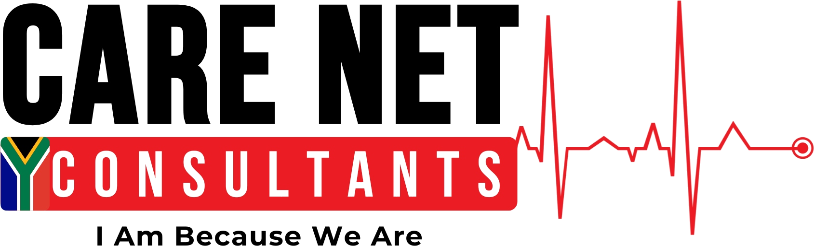
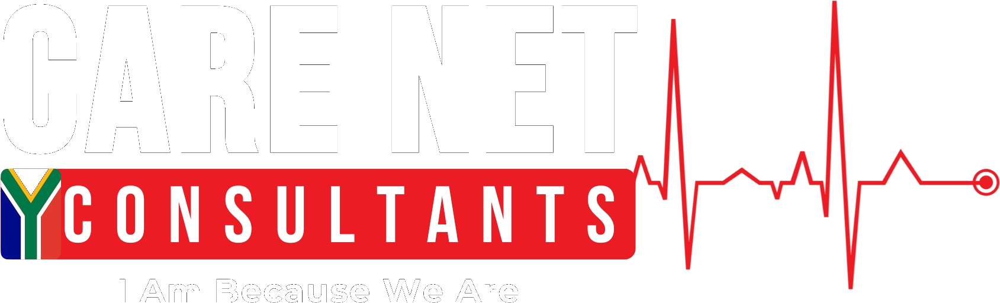

WE ARE YOUR PARTNER IN WORKPLACE HEALTH.
This is the visual story of Care Net Consultants. From our founding in 2006 as Ani's Medical Care, through our consolidation as CNC, to our 2030 vision of becoming the largest occupational health SME in South Africa. Every page that follows defines how the brand is seen, written, and felt across every channel we use.
OUR HISTORY
A mother and daughter started something in 2006 that twenty years later employs a national team and partners with industries across South Africa. The milestones below are the spine of who we are.
VISION & DNA
We aim to transform occupational health services across Africa through digital innovation, providing accessible, affordable care through our network of Occupational Health Pods. Our focus on telemedicine, mental wellness, and health education, especially in price-sensitive markets like industrial, manufacturing, and construction, will ensure we reach those who need us. By fostering shared value through strategic partnerships, we aim to become the largest SME in South Africa's occupational health sector.
OUR PERSONALITY
Five pillars that describe how the brand thinks and behaves. Every piece of copy, every visual, every interaction should reinforce at least one of them.
- Digital innovation in telemedicine and AI
- Enables positive change in the workplace
- Fail fast, fail forward
- Caring through education
- Well-being of clients first
- Informative and reassuring
- Positive impact on South Africa's diverse workforce
- Customer-centric
- Prioritise the client's needs
- Tailored, exceptional service
- Shared-value creation
- Relatable
- Valuing diversity and inclusivity
- Dynamic environment
- Partnering with clients to build safe workplaces
- Ubuntu · togetherness · unity
- Trustworthy, integrity in every test and report
- Confidential
- Professional use of technology
- Professional, qualified staff
COLOUR PALETTE
Two primaries do most of the work: red and black. The secondaries are introduced gradually. Blue for trust and innovation, green for health and growth, yellow for warmth and compassion. Greys hold everything together.
PRIMARY
SECONDARY
Use rule: Introduce the secondaries gradually through imagery, icons, and patterns. Industry-specific content can use green for health, blue for trust, yellow for compassion. Never overwhelm the primary red.
TYPOGRAPHY
Two type families do all the work. Bebas Neue for strength and presence on titles and headings. Open Sauce (substitute: Montserrat) for clear, readable body copy at 1.5 line-spacing, justified.
LOGO RULES
Horizontal or vertical, never both on the same frame. The tagline Your Partner In Workplace Health goes with everything external. For internal communications we use I Am Because We Are. Minimum digital size 56 px. Clear space equals 70% of the heartbeat height.



PATTERN USAGE
The Ndebele-inspired triangle pattern is our signature graphic element. Use it subtly. Tile it as a footer band, layer it as a circle frame around portraits, or wash it at low opacity behind a hero. Never let it compete with the message.
SYMBOLISM
South African symbols anchor our identity in the country we serve. Use them as gradual patterns, background images, or contextual cues, never as the main visual.
VOICE
Professional, compassionate, innovative. Clear, informative, supportive. Speak in simple language, adult-to-adult. Avoid jargon, avoid hype, never lecture.
APPROVAL
Every asset that leaves the Studio is routed for approval based on its content. Clinical claims go to the OMP. Nursing-led copy goes to the OHNP. Brand and digital assets go to the Director. Template-safe items (birthday cards, internal announcements) auto-approve.
| Content type | Approver | SLA |
|---|---|---|
| Clinical claims, medical thresholds, screening protocols | OMP · Occupational Medical Practitioner | 48 hours |
| Nursing-led education, screening prep, post-screening guidance | OHNP · Occupational Health Nursing Practitioner | 48 hours |
| Brand, digital assets, paid campaigns, vehicle wraps, clinic specs | DIRECTOR · Digital | 24 hours |
| Template-safe assets (birthday cards, internal announcements) | Auto-approved | Immediate |